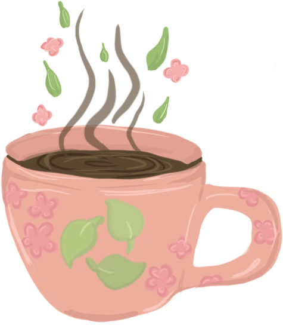

Duurzaam Café
Café de Ceuvel
Missie
Café de Ceuvel heeft als missie een verschil maken in de wereld en dat begint volgens de Ceuvel op je bord. Waarom is dat zo?
Duurzaam genieten
Café de Ceuvel werkt samen met duurzame initiatieven om eten en drinken zo milieuvriendelijk mogelijk te maken. Ze maken hun eigen frisdrank met biologische siropen van Saru Soda en serveren bier van Gulpener en kleine brouwerijen. Sinds 1 november 2020 is hun keuken volledig vegan, gebruiken ze CO2- vrije koffie van Kaap Koffie en zijn ze gasvrij.
Duurzame teelt
Ook verbouwen ze hun eigen groenten en kruiden in de kas bij het Metabolic Lab. Dit doen ze met een aquaponics systeem, waarbij vissen en planten samenwerken. De vissen zorgen voor voedingsstoffen voor de planten, en de planten maken het water weer schoon voor de vissen. Zo ontstaat een natuurlijk evenwicht.
Sociale duurzaamheid
Voor Café de Ceuvel is het sociale aspect van duurzaamheid net zo belangrijk als het milieu. Ze willen duurzame producten aanbieden aan iedereen, ongeacht achtergrond. Dit is niet altijd makkelijk, omdat biologische en lokale producten vaak duurder zijn dan geïmporteerd voedsel dat van ver komt.
Café de Ceuvel wil hun prijzen zo laag mogelijk houden, maar dat lukt niet altijd. Daarom werken ze samen met de Stadspas, zodat mensen met een kleiner budget toch betaalbaar en verantwoord kunnen eten en drinken. Ze blijven zoeken naar manieren om duurzaamheid voor iedereen toegankelijk te maken, niet alleen voor mensen met meer geld.